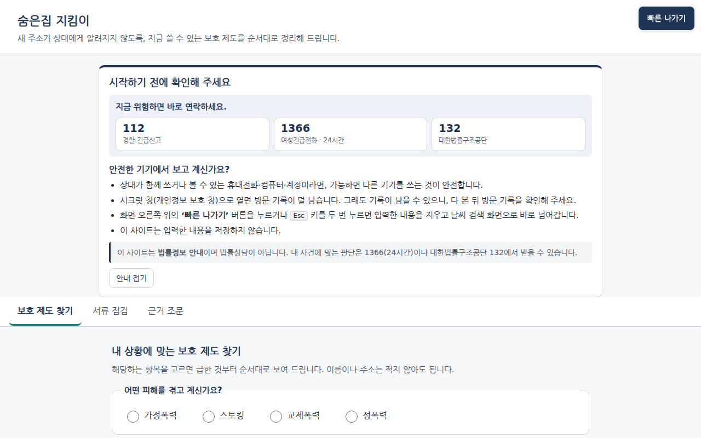

서비스 설명서 · 2026-11-01 · 앱·웹 6d08c6a(09:40) + 지식표 b7c7e1f, GPU 642e5e1 + 가드
보안 예보
서비스 설명서
main)기준: 2026-11-01 오전(최신은
git log -1 -- docs/OVERVIEW.md). 배포본은 앱·웹 993db4f(2026-11-01 04:14 KST 배포), GPU 서버 642e5e1, 그리고 06:03 KST 에 b7c7e1f 의 가드·지식표·조문 파일 6개(docs/architecture.md 머리말, docs/evidence/deploy-2026-11-01.md).대회 서버는 11/2 2차 심사까지 유지됩니다(운영 측의 '2026-11-01 13:00 삭제' 안내는 오기로 확인, 2026-11-01 밤 접속 확인, 그 뒤 유지 여부는 미확인). 서버는 대회 SSL-VPN 으로만 닿으므로, 서버 없이 띄우려면 GPU 없는 로컬 모드(
docs/LOCAL_DEV.md)나 직접 구성(README.md, docs/evidence/repro-2026-11-01.md)을 씁니다.그림 포함 판:
docs/OVERVIEW.html (브라우저로 열기, 인쇄 가능)이 문서는 서비스가 무엇이고 어떻게 동작하는지를 한곳에 정리한 설명서입니다. 다른 문서와의 관계는 아래와 같습니다.
| 문서 | 무엇이 있나 |
|---|---|
docs/OVERVIEW.md (이 문서) | 기술 스택, 아키텍처 요약, 서비스 구조, 서비스 흐름, 사용자 이용 절차, 안전 설계, 한계 |
docs/EVIDENCE.md | 숫자의 단일 기준. 0절 「대표 수치」 표(번호 0-1~0-23)에 값·표본·세트 용도·95% 구간·출처가 있습니다. 이 문서의 숫자는 그 번호를 인용합니다 |
docs/SUBMISSION.md | 채점 요건 ⓐ~ⓖ 순서의 제출 문서(모델 선택 이유, 직접 개발 범위, 외부 자원, 기대 효과) |
docs/PT_HANDOFF.md | 발표자용: 발표 흐름, 11/2 라이브 시연 대본, 예상 질문, 숫자 규칙 |
docs/architecture.md, docs/SPEC.md §11 | 구현 상세의 정본 |
읽는 법
- 모든 평가 수치는 합성(지어낸) 데이터로 잰 값입니다. 실제 피해자·실제 서류로 잰 값이 아닙니다.
- 저장소에서 근거를 찾지 못한 것은 미확인 이라고 적었습니다.
- 공격 문장 원문과 사람을 찾는 방법은 이 문서에 넣지 않았습니다.
목차
- 한눈에 보기
- 기술 스택
- 아키텍처 요약
- 서비스 구조
- 서비스 흐름
- 사용자 이용 절차
- 안전·개인정보 설계
- 품질 검증 결과 요약
- 한계와 다음 단계(기대 효과·확장 로드맵 포함) 9-1. 팀
- 용어집
- 부록. 그림 파일 목록
1. 한눈에 보기
| 구분 | 내용 |
|---|---|
| 문제 | 피해자가 피신해도 새 주소가 행정·소송·생활 기록(주민등록, 소장 송달, 자녀 학교, 차량, 우편 등)을 타고 가해자에게 새어 나갈 수 있습니다. 막는 제도는 있지만 흩어져 있고, 신청해야만 작동하며, 어떤 제도는 신청 사실이 상대에게 통지됩니다. (README.md, docs/research/2026-10-31-정보조사.md) |
| 해결 | 이름·주소 없이 상황만 고르면(또는 말로 적으면), 새 주소가 샐 수 있는 경로와 그 경로를 막는 제도를 근거 조문·신청처·서류·통지 경고와 함께 급한 순서로 보여 주는 웹 서비스입니다. 제출할 서류 초안 속 위치 단서도 찾아 줍니다. |
| 부제 | 피해자의 새로운 주소가 노출되기 전에 (2026 CODYSSEY HACKATHON · EasyPeasy, 팀 발표 자료 1쪽) |
| 노출 경로 세 갈래 | ① 소송 서류를 통한 노출 ② 행정·생활 기록을 통한 노출 ③ 문서 속 간접 단서를 통한 노출 (발표 자료 2쪽) |
| 누가 쓰나 | 가정폭력 피해자, 스토킹 피해자, 이혼·소송 당사자, 가해자와의 분리·신변 보호가 필요한 일반 시민(발표 자료 4쪽). 교제폭력·성폭력 피해자와 피해자 본인의 가족·지인도 포함. 회원가입·로그인 없음. (docs/architecture.md 원칙 1) |
| 서비스 흐름 | 상황 입력 → AI 상황 정리 → 노출 경로 진단 → 대응 안내 (발표 자료 5쪽, 5절) |
| 핵심 기능 | 서류 점검 / 긴급 대응 / 근거 조문 검색 (발표 자료 6쪽) |
| 하지 않는 것 | 사람을 찾는 방법은 다루지 않습니다. 다른 사람의 주소·위치를 찾으려는 질문은 거절하고 대신 보호 제도를 안내합니다. 법률상담이 아니라 법률정보 안내입니다. |
실제 사례 (보도 기준)
- [1] 보도(연합뉴스 2026.09.02, 경기 광주)에 따르면 이혼 소장에 적힌 주소로 피신처가 드러났고, 피해자는 소송 단계의 주소 비공개를 신청하지 않은 상태였습니다. 조사 문서는 피해자가 살해됐다고 2차 보도를 근거로 적었습니다(
docs/research/2026-10-31-정보조사.md사례 표,docs/research/2026-11-01-발전방향.mdS22·S23). - [2] 대구여성의전화(2026.10.27)는 법원 결정문을 통해 피해자 주소가 노출된 사례를 알렸습니다(팀 발표 자료 3쪽 인용. 저장소 조사 문서에서 원문은 미확인).
핵심 숫자 (값과 단서는 docs/EVIDENCE.md 0절이 기준)
| 숫자 | 뜻 | 기준 |
|---|---|---|
| 84개 경로 / 16개는 막을 제도 없음 | 주소가 드러날 수 있는 기록·절차 경로 84개. 16개는 막을 제도가 없어 '잔여 위험'으로 따로 안내 | data/knowledge.json |
| 56 / 56 | 합성 시나리오 20개에서 꼭 나와야 할 제도를 모두 찾음. 같은 저자가 만든 개발 세트이고, 84행 중 35행만 시험함 | 0-1 |
| 입력 저장 0 · 외부 LLM 호출 0 | DB 없음, 로그엔 '메서드 경로 상태코드'만. 표지 문자열 60회 전송 뒤 세 로그 모두 0건 | docs/evidence/infra.md §6 |
| 레드팀 3/84 = 3.6% | 현재 배포본, 검색·답 경로 고정 공격 84건 중 가드가 거절하지 못한 것(95% 구간 1.2–10.0%, 개발 세트). 2026-10-31 서비스 경로 전체 112건 기준 값은 5/112 = 4.5%(이력). 위치 찾기 방법이 출력된 응답은 0건(정규식 검출기와 AI 검토 기준, 검출기 재현율 미측정) | 0-12, 0-14 |
| 시간당 약 200세션 · 세션당 약 9.7원 | L4 1장, 품질이 유지되는 동시 2건 기준(합성 부하). 세션당 실제 토큰 약 22,349 | 0-16, 0-17 |
2. 기술 스택
| 계층 | 기술 | 버전 | 역할 | 근거 |
|---|---|---|---|---|
| 화면(웹) | HTML / JavaScript / CSS (프레임워크 없음) | — | 안전 안내 팝업, 긴급 연락처 띠, 상황 선택, 결과 카드·인쇄, 서류 점검 1단계, 빠른 나가기 | 외부 CDN·쿠키·브라우저 저장소·인라인 스크립트 없이 만들려고(web/static/app.js 머리 주석, docs/LOCAL_DEV.md) |
| 언어·패키지 | Python 3.12 이상 · uv(uv.lock) | 운영 서버 3.12.3 | 서버 프로그램, 의존성 고정(uv sync --frozen) | pyproject.toml, README.md |
| 운영 API | FastAPI · Starlette · Uvicorn · Pydantic · httpx | 0.162.0 · 1.10.0 · 0.54.0 · 2.14.2 · 0.28.1 | 진단·검색·가드·LLM 중계 | uv.lock |
| 추론 API | FastAPI + sentence-transformers · GLiNER · PyTorch · transformers | 6.2.0 · 0.2.29 · 2.15.0 · 5.16.1 (서버 실측) | 임베딩·재순위·개체명 인식·의도 점수·LLM 중계·검증 | gpu/pyproject.toml, 서버의 잠금 파일은 gpu/uv.lock(회수본), docs/evidence/repro-2026-11-01.md |
| 임베딩 | BAAI/bge-m3 (MIT) | — | 조문 검색, 질문 의도 점수 | gpu/server.py |
| 재순위 | BAAI/bge-reranker-v2-m3 (Apache-2.0) | — | 검색 결과 재정렬, 답 문장 근거 확인 | gpu/server.py, gpu/verify.py |
| 개체명 인식 | urchade/gliner_multi-v2.1 (Apache-2.0) + 정규식 | — | 서류 속 주소·직장·학교·차량·생활권 단서 | gpu/server.py |
| 내부 LLM | Qwen/Qwen3-8B-AWQ (Apache-2.0) | — | 상황 정리, 근거 답, 문장 다시 쓰기, 답 검증 | docs/SPEC.md §11.7 |
| LLM 서빙 | vLLM (OpenAI 호환 서버) | 0.32.0 | Qwen 실행, JSON 형식 강제 출력, thinking 끔, 요청·출력 로그 끔 | gpu/llm_start.sh, docs/evidence/repro-2026-11-01.md |
| GPU | NVIDIA L4 1장 | 23,034 MiB, 드라이버 580.159.04, CUDA 13.0 | 모든 모델 실행 | docs/evidence/repro-2026-11-01.md 1절 |
| 실행 관리 | 셸 스크립트 + PID 파일 (Docker·systemd 안 씀) | — | 시작·중지 | scripts/start_app.sh, gpu/start.sh, gpu/llm_start.sh |
| 시험 | pytest | — | 앱 598 passed · 36 xfailed / GPU 188 passed · 4 xfailed | 0-21 |
| (개발용만) | GLM-5.3-Flash (제3자 서버) | — | 합성 사용자 시뮬레이터·레드팀 도구. 운영 코드에는 없음 | docs/SPEC.md §11.7 |
모델을 고른 이유(자체 호스팅 · 배포에 걸림 없는 라이선스 · L4 1장에 함께 탑재 · 한국어)와 검토한 대안은 docs/SUBMISSION.md ⓒ 「왜 이 모델인가」와 docs/architecture.md 「모델 선택 근거와 검토한 대안」에 있습니다. 같은 데이터로 대안 모델과 A/B 비교는 하지 않았습니다.
3. 아키텍처 요약
3.1 서버 배치
출처: docs/architecture.md 배치도, docs/evidence/infra.md §1·§3
발표 자료(7쪽) 구성 요소 이름과 코드의 대응
| 발표 자료 이름 | 코드·위치 |
|---|---|
| Frontend (Vanilla HTML/JS) | web/ (index.html, static/app.js, static/detect.js) |
| Application Server · FastAPI :8080 | app/main.py (hk-ops) |
| └ Input Guard | app/guard.py (2단 가드의 1차, 정규화·intake 강화) |
| └ Rule-based Diagnosis | app/engine.py (규칙 진단 엔진) |
| └ Knowledge Retrieval | app/retrieval.py (조문 검색, GPU 없으면 BM25) |
| └ LLM Proxy | app/llm.py (내부 LLM 중계, 출력 가드 호출) |
| Knowledge Base | data/knowledge.json(84개 경로) + data/laws/articles.jsonl(법령 조문 175건, 노출 가능 131) |
| GPU Inference Server · FastAPI :8000 | gpu/server.py (hk-gpu, /health 밖은 공유 토큰) |
| └ BGE-M3 / BGE-Reranker-v2-M3 | /embed / /rerank |
| └ GLiNER multi-v2.1 | /ner (서류 정밀 점검, 700자 조각) |
| └ vLLM :8001 · Qwen3-8B-AWQ | gpu/llm_start.sh, 127.0.0.1:8001 |
| └ Output Guard / Verify | gpu/verify.py (공통 출력 가드, 문장별 근거 검증) |
발표 자료 11쪽의 Security Policy · Intent Classifier · Task Router · GPU Scheduler 는 향후 아키텍처(계획)이며 지금 코드에는 없습니다(현재 의도 점수 /intent 는 가드 신호로만 씁니다).
- 서버 이름: 저장소 문서는
hk-ops(운영)·hk-gpu(추론)를 씁니다. 대회 서버 이름은 각각inno-server-028·inno-gpu-028입니다(docs/evidence/infra.md§1 표). 둘 다 Ubuntu 24.04.1 LTS 입니다(docs/evidence/infra-2026-10-31-night.md1절). - 접근: 노트북 VPN(NCP SSL-VPN) 경유, 화면은 ssh 터널로만 엽니다.
3.2 포트
| 서버 | 주소:포트 | 프로그램 | 누가 닿나 |
|---|---|---|---|
| hk-ops | 127.0.0.1:8080 | 운영 API + 웹 화면 | 서버 자신(시연은 ssh 터널) |
| hk-gpu | 0.0.0.0:8000 | 추론 API | 운영 서버(내부망)와 SSL-VPN 사용자. 클라우드 접근 규칙(ACG)은 우리가 바꿀 수 없어, 2026-11-01 부터 /health(참·거짓만) 밖은 공유 토큰 없이 401 (docs/evidence/deploy-2026-11-01.md) |
| hk-gpu | 127.0.0.1:8001 | vLLM (Qwen3-8B) | 서버 자신만 |
3.3 신뢰 경계 (어디를 믿지 않고, 어떻게 막는가)
| 경계 | 믿지 않는 것 | 막는 방법 |
|---|---|---|
| 브라우저 → 운영 API | 사용자 입력·대화 이력 전부 | 길이·형식 상한, 모르는 필드 거부, 2단 가드, 오류 응답에 입력을 되비추지 않음, 보안 머리글 |
| 운영 API → 추론 서버 | 내부망 + VPN 사용자(포트가 VPN 에서 닿음) | 공유 토큰 X-Internal-Token(없거나 틀리면 401), 본문 20KB 상한, 추론 서버에서 같은 가드를 한 번 더, 글자 위치 단위 변환(UTF-16) |
| 사용자 글 → LLM | 몰래 넣은 지시문(프롬프트 주입) | 특수 토큰·역할 머리말·지시문 문장 제거, JSON 형식 강제 |
| LLM → 사용자 | 생성된 문장 전부 | 공통 출력 가드, 답 문장별 근거 검증, 탐색 표현 검사, 다시 쓰기 정렬 검사 |
| 개발 기기 ↔ GLM(제3자) | 제3자 서버 | 시뮬레이터·레드팀 도구만, 합성 데이터만 보냄 |
출처: docs/architecture.md 신뢰 경계
3.4 모델과 GPU 메모리 (NVIDIA L4, 23,034 MiB)
| 프로그램 | 모델 | GPU 메모리 |
|---|---|---|
| vLLM | Qwen3-8B-AWQ | 13,948 MiB |
| 추론 API | bge-m3 + bge-reranker-v2-m3 + GLiNER | 5,686~5,790 MiB (메모리 가드 뒤) |
| 합계 | 19,648~19,752 / 23,034 MiB |
출처: docs/EVIDENCE.md 0-19. 메모리 가드 전 값(20,480~20,912 MiB)은 옛 값입니다. 추론 API 사용량은 기동과 요청 이력에 따라 바뀝니다(2026-11-01 04:4x 회수 시점 20,086 MiB, docs/evidence/repro-2026-11-01.md 1절).
3.5 외부로 나가지 않는 것
- 사용자 입력을 외부 LLM·외부 API 로 보내는 경로가 없습니다. 쓰는 LLM 은 GPU 서버에서 직접 띄운 Qwen 하나뿐이고, 실패해도 다른 LLM 으로 넘기지 않습니다(화면은 체크박스 방식으로 계속). (
docs/SPEC.md§11.7,docs/evidence/infra.md§5) - 런타임 코드의 외부 주소는 '빠른 나가기'의 이동 대상(구글 '날씨' 검색) 하나뿐입니다.
- 모델 파일은 설치 때 받아 두고, 실행 중에는
HF_HUB_OFFLINE=1로 모델 허브 접속을 끊었습니다(gpu/start.sh,gpu/llm_start.sh, 커밋6672867. 재기동 뒤 새 경고 0회,docs/evidence/infra-2026-10-31-night.md4절).
4. 서비스 구조
4.1 디렉터리 지도
| 경로 | 하는 일 |
|---|---|
web/index.html, web/static/app.js, app.css | 화면: 안전 안내 팝업, 긴급 연락처 띠, 탭 3개(보호 제도 찾기 · 서류 점검 · 근거 조문), 결과 카드, 빠른 나가기, 맨 위로 버튼, 하단 도움 줄 |
web/static/detect.js | 서류 점검 1단계(브라우저 안에서만 도는 규칙 검사) |
web/favicon_easyPeasy.ico | 파비콘(팀원 김시현 자체 제작) |
app/main.py | 운영 API 입구: 입력 검사, 보안 머리글, 로그 정책 |
app/engine.py | 규칙 진단 엔진. 어떤 제도를 권할지는 여기서만 정함 |
app/guard.py (= gpu/guard.py) | 2단 가드(질문이 '다른 사람 찾기'인지 판정), 입력 정규화 |
app/retrieval.py | 조문 검색(임베딩+재순위, 안 되면 낱말 검색 BM25) |
app/llm.py | 추론 서버 LLM 기능 중계, 출력 가드, 인용 정리 |
gpu/server.py, gpu/verify.py, gpu/llm.py | 추론 API, 답 검증 루프·공통 출력 가드, vLLM 호출 |
data/knowledge.json | 지식표: 경로·제도 84행, 상황 항목 30개 |
data/laws/articles.jsonl | 법령 조문 스냅샷 175건(65개 법령, 노출 가능 131 · 검색 제외 44) |
data/eval/ | 합성 평가 데이터와 결과 |
tools/mock_gpu.py | GPU 없이 화면을 띄우는 모의 추론 서버(docs/LOCAL_DEV.md) |
tools/demo/ | 시연 영상 자동 녹화기(Playwright) |
docs/, research/, pt/ | 명세·아키텍처·증빙·조사·발표 자료 |
4.2 운영 API 목록 (app/main.py)
| 주소 | 하는 일 | AI 사용 | 입력 상한 |
|---|---|---|---|
GET / | 화면(web/index.html) | — | |
GET /api/health | 상태(지식표 행 수, 조문 임베딩 완료 여부) | — | |
GET /api/flags | 상황 항목 30개(7묶음), 피해 유형 4개 | — | |
GET /api/features | AI 기능을 지금 쓸 수 있는지(30초 캐시). false 면 화면이 AI 칸을 숨김 | — | |
POST /api/diagnose | 피해 유형 + 상황 → 제도 목록 | 안 씀(규칙 엔진) | 상황 항목 60개 |
POST /api/search | 근거 조문 검색(상위 5개) | 임베딩·재순위 | 500자, 가드 거침 |
POST /api/doccheck | 서류 정밀 점검(단서 위치만 돌려줌) | GLiNER | 20,000자 |
POST /api/intake | 말로 적은 상황 → 항목 미리 선택 | Qwen | 2,000자, 가드 거침 |
POST /api/answer | 고른 제도에 대한 질문에 근거 답 | Qwen + 검증 | 500자, 항목 1~8개, 가드 거침 |
POST /api/rewrite | 서류 문장을 안전한 문장으로 | Qwen | 1,500자, 동시 2건·주소당 1건 |
오류: 시간 초과 504, 기능 불가 503("지금은 이 기능을 쓸 수 없습니다. 체크 항목으로 계속 진행할 수 있습니다."), 형식 오류 422(입력 내용을 되비추지 않음). 추론 API(gpu/server.py): /health, /embed, /rerank, /ner, /intent, /llm/intake, /llm/answer, /llm/rewrite, 본문 20KB 초과 시 413.
4.3 데이터 — 지식표 (data/knowledge.json, version 2026-10-31)
한 행 = "주소가 샐 수 있는 경로 하나 + 그것을 막는 제도". 주요 칸: exposure(이 경로로 생길 수 있는 위험), measure(막는 제도), plain(쉬운 말 설명), basis(근거 법령·조문·시행일·원문 링크), victim_types, triggers(어떤 상황 항목일 때), urgency(1~3), timing·where·documents·limits, notify_warning(신청하면 상대에게 알려질 수 있음), status(시행 중 / 시행 예정 / 막을 제도 없음), confidence(법령 원문 확인 수준), plain_reviewed(사람 검수 여부).
| 집계 | 값 |
|---|---|
| 전체 | 84행, 상황 항목 30개(주거 · 소송·수사 · 자녀 · 차량 · 우편·통신 · 디지털 · 생활·기타, 7묶음) |
| 상태 | 시행 중 67 · 막을 제도 없음 16 · 시행 예정 1(2027-04-22) |
| 확인 수준 | 확인 49 · 부분확인 31 · 미확인 4 |
| 통지 경고가 있는 행 | 12 |
| 쉬운 설명 사람 검수 | 0 / 84 (화면에 'AI 생성(검수 전)' 표시, 0-23) |
출처: data/knowledge.json 집계, 명령은 docs/EVIDENCE.md 1절
4.4 데이터 — 조문 스냅샷 (data/laws/articles.jsonl)
- 국가법령정보센터 현행 조문 175건(65개 법령), 2026-10-31 기준(2026-11-01 에 주택임대차보호법 시행령 제6조 1건 추가).
- 화면·검색에 쓸 수 있는 조문(
exposable)은 131건. 열람·교부 절차처럼 사람 찾기에 쓰일 수 있는 조문은 검색 대상에서 뺐습니다. 표시가 없으면 빼는 쪽으로 처리합니다(fail-closed).
5. 서비스 흐름
발표 자료 5쪽의 흐름 상황 입력 → AI 상황 정리 → 노출 경로 진단 → 대응 안내 가 아래 절에 이렇게 대응합니다: 상황 입력·AI 상황 정리는 6절 단계 2·2-1(intake), 노출 경로 진단은 5.1, 대응 안내는 5.1 결과 카드·통지 경고·잔여 위험과 5.2 근거 질문입니다. 핵심 기능 세 가지(서류 점검 / 긴급 대응 / 근거 조문 검색)는 5.3 서류 점검, 7절 안전 장치(긴급 연락처 띠·빠른 나가기), 6절 단계 8 근거 조문 탭입니다.
5.1 진단 (AI 안 씀)
- 브라우저 →
/api/diagnose{피해 유형, 상황 항목} - 규칙 엔진이 84행을 하나씩 확인: 상황 조건이 맞는가 → 피해 유형이 맞는가 → 상태(시행 중/예정/없음)
- 세 묶음으로 나눔: 해당 제도(체크리스트) / 잔여 위험(막을 제도 없음) / 이 유형엔 해당 없음
- 정렬: 급한 정도 1→2→3 → 영역 → 번호, 시행 예정은 맨 뒤
- 화면: '지금 먼저 할 일'(급한 제도 최대 5건 + 급한 잔여 위험), 나머지는 '다른 보호 제도 N건 더 보기'로 접어 둠
출처: app/engine.py, web/static/app.js(TOP_MAX = 5)
5.2 근거 질문 ("이게 무슨 뜻인가요?")
- 질문 + 고른 제도 번호 → 운영 API 1차 가드
- 통지 여부·효과 시점 질문이면 AI 가 만들지 않고 지식표 원문을 그대로 보여 줌
- 추론 서버 2차 가드 → 지식표 행 + 공개 조문만으로 Qwen 이 답 생성
- 검증: 규칙 → 재순위 모델(문장마다 근거 대조) → Qwen 검증기
- 실패하면 한 번 다시 생성 → 그래도 실패하거나 남은 시간이 4초 미만이면 원문 발췌로 대신(전체 예산 12초)
- 공통 출력 가드 → 운영 API 출력 가드·인용 정리 → 화면(답 종류 배지와 함께)
출처: gpu/verify.py, gpu/server.py, app/llm.py
5.3 서류 점검
- 기본 점검(1단계): 브라우저 안 규칙으로만. 서버로 보내지 않음
- 정밀 점검(2단계): 사용자가 눌렀을 때만 서버로 → GLiNER(700자 조각) + 정규식 → 단서 위치만 돌려줌
- 안전한 문장으로 바꾸기: 원문 + 단서 → Qwen 제안 → 원문과 정렬되는지·없던 숫자·새 이름·장소가 생겼는지 검사 → 문제 있으면 규칙 치환(예: [주소 비공개])
출처: web/static/detect.js, app/main.py, gpu/server.py
5.4 가드 판정 (질문이 '다른 사람 찾기'인가?)
- 입력 정규화: 글자 모양 통일, 숨은 문자 제거, 인코딩된 글 풀기 등
- 규칙(낱말·구문) + 임베딩 의도 점수로 판정
- 등급 5개: 본인 보호(self_protect)·일반(neutral) → 그대로 진행 / 애매함(ambiguous) → 진행하되 보호 안내 상자 / 제3자 탐색(third_party_locate) → 거절 + 보호 제도 대안 2~3개 + 1366·132·112 / 다시 써 주세요(rephrase) → 초성만 쓴 글 등
- 대화 이력(최근 6턴)도 이어 붙여 다시 판정. 같은 가드를 운영 API 와 추론 서버에서 두 번 돌림
출처: app/guard.py, app/main.py, gpu/server.py (판정 규칙 원문은 공개하지 않음)
5.5 답변 검증 루프
생성 → 검증 → (실패) 1회 재생성 → 검증 → (실패) 원문 발췌. 답 종류 배지: 'AI 생성 + 문장별 근거 확인' · '고쳐서 다시 확인함' · '안내문 원문 발췌' · '안내문 원문' · '확인되지 않음'.
6. 사용자 이용 절차
화면은 PR #2(팀원 김시현) 병합판, 배포본 앱·웹 6d08c6a(PR #4 포함) 기준입니다(docs/SPEC.md §11.11, web/index.html, web/static/app.js).
단계 1. 들어오면 — 안전 안내 팝업
- 들어올 때마다 '시작하기 전에 확인해 주세요' 팝업이 뜹니다. 방문 기록을 기기에 남기지 않으려고 '이미 봤음'을 저장하지 않기 때문입니다(브라우저 저장소를 쓰지 않음).
- 팝업 안: 안전한 기기 안내(상대와 함께 쓰는 기기 피하기, 시크릿 창, 빠른 나가기·Esc 두 번, "입력한 내용을 저장하지 않습니다"), "법률정보 안내이며 법률상담이 아닙니다", 1366(24시간)·132 안내.
- 하는 것: 읽고 '닫기'. 팝업 바깥 어두운 배경을 눌러도 닫힙니다. 다시 보려면 위쪽 띠의 '안전 안내 다시 보기'.
- 화면 위쪽에는 늘 긴급 연락처 띠(112 경찰 긴급신고 · 1366 여성긴급전화 24시간 · 132 대한법률구조공단, 누르면 전화), 오른쪽 위에는 빠른 나가기 버튼, 아래에는 고정된 도움 줄("혼자 하기 어려우면 1366 · 132 · 위험이 급하면 112")이 있습니다. 화면을 내리면 '맨 위로' 버튼이 나타납니다.
- 시스템이 다크 모드면 화면도 어둡게 바뀝니다.
단계 2. 피해 유형과 상황 고르기 ('보호 제도 찾기' 탭)
- 피해 유형 4개 중 하나: 가정폭력 / 스토킹 / 교제폭력 / 성폭력 ("이름이나 주소는 적지 않아도 됩니다")
- 상황 항목 30개는 7개 묶음으로 접혀 있습니다(주거 · 소송·수사 · 자녀 · 차량 · 우편·통신 · 디지털 · 생활·기타). 묶음을 펼쳐 해당하는 항목을 체크합니다(예: '최근 이사(또는 이사 예정)', '가해자가 원고·채권자로 먼저 소송을 냄', '자녀가 학교에 다님(입학·전학 예정 포함)', '옛 주소(가해자 거주지)로 우편물이 감').
단계 2-1. (선택) 말로 설명하기 — AI
- 상황을 자유롭게 적고(최대 2,000자) '항목 골라 보기'
- AI 가 유형·항목을 미리 체크(점선 강조)하고, AI 가 고른 항목이 있는 묶음은 자동으로 펼쳐집니다. 'AI 생성' 배지가 붙은 확인 상자에 고른 항목마다 '빼기', 필요하면 확인 질문이 나옵니다.
- '고른 항목을 확인했습니다'를 체크해야 제출 버튼이 켜집니다 → AI 가 혼자 제출하는 일은 없습니다.
단계 3. 결과 보기
- '보호 제도 보기' → 요약(해당 제도 N건 · 잔여 위험 N건 · 해당 없음 N건), 결과 인쇄하기(인쇄 때는 접힌 칸이 모두 펼쳐짐)
- 지금 먼저 할 일: 급한 제도 최대 5건(누르면 해당 카드로 이동). 나머지는 '다른 보호 제도 N건 더 보기' 안에 접혀 있습니다.
- 제도 카드는 위험 → 도움 순서로 읽습니다: 급한 정도 배지와 제도 이름 → '이 상황에서 생길 수 있는 위험' → '이 제도로 받을 수 있는 도움'(쉬운 말 설명, 'AI 생성(검수 전)' 표시) → 확인 수준·피해 유형 → 시기 → 접힌 칸('어디서 신청하나요'·'필요한 서류'·'한계'·'근거·자세히').
단계 4. 통지 경고 확인
- 신청하면 상대에게 알려질 수 있는 제도에는 주황 경고 상자('신청하면 상대에게 알려질 수 있습니다')가 붙습니다. '상대에게 알려질 수 있다는 점을 확인했습니다' 를 체크해야 쉬운 설명과 신청 방법이 보입니다.
단계 5. 잔여 위험 확인
- '제도로 막을 수 없는 경로 — 미리 대비해 주세요': 주소가 남을 수 있는 기록과 "이 경로를 막는 제도는 없습니다", 상담 안내만 보여 줍니다.
단계 6. (선택) 이게 무슨 뜻인가요? — AI
- 카드의 버튼 → 질문(최대 500자) → 답 위에 종류 배지('AI 생성 + 문장별 근거 확인' / '고쳐서 다시 확인함' / '안내문 원문 발췌' / '안내문 원문' / '확인되지 않음')
- "신청하면 상대에게 알려지나요?" 같은 통지·시점 질문은 AI 가 만들지 않고 지식표 원문으로 답합니다.
단계 7. (선택) 서류 점검 탭
- 서류 초안 붙여 넣기 → ① 기본 점검(이 브라우저에서만) ② 정밀 점검(서버) ③ 안전한 문장으로 바꾸기(AI, 1,500자 이하)
- 원문에 단서 색칠 + 찾은 단서 목록과 바꾸는 방법 제안. 바꾸기 결과는 원래 문장 / 바꾼 문장 나란히, "제안일 뿐입니다. 꼭 확인해 주세요"
단계 8. (선택) 근거 조문 탭
- 질문 → 법 조문 카드. 찾은 조항 원문이 먼저 보이고, 법 이름·조문·시행일·원문 링크는 '출처 및 시행일' 안에 접혀 있습니다.
- 다른 사람의 주소·위치를 찾으려는 질문이면 거절 상자 + 대안 제도 + 1366·132·112
언제든. 빠른 나가기
- 버튼 또는 Esc 1초 안에 두 번 → 입력·대화 모두 지움 → 탭 제목 '날씨' → 구글 '날씨' 검색으로 바꿔치기 이동(
location.replace, 서비스 화면이 방문 기록에서 대체됨)
이용 예시 (합성 사례, 실제 인물 아님)
- 상대가 볼 수 없는 자기 휴대폰, 시크릿 창으로 접속 → 안전 안내 팝업을 읽고 '닫기'
- '가정폭력' 선택 → '주거'·'소송·수사'·'자녀' 묶음을 펼쳐 '최근 이사', '민사·가사 소송 중이거나 예정', '가해자가 원고·채권자로 먼저 소송을 냄', '자녀가 학교에 다님' 체크
- '보호 제도 보기' → '지금 먼저 할 일'에서 급한 제도부터. 카드마다 '생길 수 있는 위험'을 먼저 읽고 '받을 수 있는 도움'을 확인(예: 소송 중 항목을 고르면 '소송관계인 개인정보 보호조치(주소 등 비공개)'가 급한 정도 1로 나옴,
data/knowledge.jsonJ1) - 통지 경고가 붙은 제도는 "상대에게 알려질 수 있다"를 확인한 뒤 신청처·서류를 봄
- 잔여 위험 묶음에서 막을 제도가 없는 경로를 미리 대비
- 답변서 초안을 '서류 점검'에 붙여 주소·학교 단서를 '[주소 비공개]' 같은 문구로 바꿈
- 결과를 인쇄해 1366 상담 때 가져가고, 끝나면 빠른 나가기
7. 안전·개인정보 설계
| 항목 | 설계 | 출처 |
|---|---|---|
| 저장 안 함 | DB 없음. 서버가 쓰는 파일은 PID·로그뿐. 대화 이력은 브라우저 메모리에만 있다가 요청마다 함께 보냄(서버 무상태). 새로 고침·빠른 나가기로 사라짐 | docs/architecture.md, web/static/app.js |
| 브라우저 | localStorage·sessionStorage·쿠키 안 씀(안전 안내 '본 적 있음'도 저장하지 않아 매번 팝업), 외부 CDN 없음, 인라인 스크립트 없음(CSP default-src 'self') | web/static/app.js, 커밋 5b7f3a7 |
| 로그 | 운영 API: '메서드 경로 상태코드' 한 줄만(본문·IP 없음), 가드는 등급·사유만. vLLM 요청·출력 로그 끔. 추론 서버 접속 로그에는 운영 서버 내부 IP·경로·상태코드가 남음 | docs/evidence/infra.md §6 |
| 표지 문자열 시험 | 특수 문자열을 60회 보낸 뒤 앱·GPU·LLM 로그에서 0건 | docs/evidence/infra.md §6 |
| 보안 머리글 | CSP(자기 사이트만), Cache-Control: no-store, X-Frame-Options: DENY, Referrer-Policy: no-referrer, nosniff. 단 500 오류 응답에는 빠짐(알려진 결함) | app/main.py, docs/TEST_RESULTS.md P0-03 |
| 입력 상한 | 질문 500자, 상황 2,000자, 서류 20,000자, 다시 쓰기 1,500자, 이력 6턴·3,000자 | app/main.py |
| 가드 | 2단 가드(규칙 + 임베딩 점수), 운영 API·추론 서버 두 번. 거절할 때도 보호 제도 대안과 연락처를 붙임 | app/guard.py |
| AI 출력 통제 | 답은 지식표·공개 조문만 근거로, 문장별 검증. 통지·시점 질문은 생성 안 함. AI 문장에는 'AI 생성' 배지 | gpu/verify.py, app/llm.py |
| 사람 확인 | AI 가 고른 항목은 사용자가 확인해야 제출. 통지 경고는 확인 체크 뒤에만 신청 방법 표시 | web/static/app.js |
| 긴급 연결 | 위쪽 긴급 연락처 띠(112·1366·132), 하단 고정 도움 줄, 거절·결과마다 연결 줄 | web/index.html |
| 빠른 나가기 | 버튼 / Esc 두 번. Esc 가 이동을 취소하던 문제를 6672867 에서 수정 | web/static/app.js |
| 법적 경계 | 법률정보 안내이며 법률상담이 아님. 막는 제도만 안내, 사람 찾는 방법·조회 요건은 다루지 않음. 열람·교부 절차 조문은 검색에서 뺌 | README.md, docs/architecture.md 원칙 2 |
| 속도 제한 | '다시 쓰기'에만(동시 2건, 주소당 1건). 다른 기능엔 없음 | app/main.py |
| 추론 서버 인증 | /health 밖 모든 경로에 공유 토큰(상수 시간 비교, 토큰 파일 없으면 전부 거절). 로그 3개 출현 0건 | gpu/server.py, docs/evidence/deploy-2026-11-01.md |
| GPU 메모리 가드 | CUDA 메모리 부족은 500 대신 503 + 캐시 비움, 큰 요청 뒤 캐시 비움 | gpu/server.py, gpu/start.sh |
8. 품질 검증 결과 요약 (모두 합성 데이터)
값·표본·세트 용도·95% 구간은 docs/EVIDENCE.md 0절이 기준입니다. '개발 세트'는 같은 저자가 만들고 개발 중에 본 세트, '조정 세트'는 규칙을 맞추는 데 쓴 세트, '보류 세트'는 조정에 쓰지 않은 세트입니다.
| 영역 | 결과 | 세트 | 번호 |
|---|---|---|---|
| 진단 | 필수 제도 56/56, 오적용 0 (84행 중 35행만 시험) | 개발 | 0-1 |
| 근거 조문 | 법령 원문에 있음 212/212, 시행일 일치 205/212 | 스냅샷 대조 | 0-3 |
| 조문 검색 | R@5 0.964 = 53/55 | 보류 | 0-4 |
| 근거 답 | 정답률 0.956 = 43/45. 근거 없는 문장 첫 생성 3.6% → 최종 0%(같은 검증기로 다시 잰 값, 독립 판정 아님) | 개발 | 0-5, docs/EVIDENCE.md 4절 |
| 배포 앱 근거 답 | 답할 수 있는 질문 12/15, 근거 밖 질문 15/15 '확인되지 않음' | 개발 | 0-6 |
| 상황 정리 | 단일 턴 F1 0.791. 다턴 단독 재현율 0.276 → 그래서 사용자 확인 단계를 둠 | 개발 | 0-7 |
| 입력 가드 | 찾기 질문 거절 35/35, 정상 질문 오거절 0/25(95% 상한 13.3%) | 조정 | 0-8, 0-9 |
| 자기 보호 질문 오거절(세트 밖) | 띄어쓰기 변형 10/40, 긴 사연 5/50, 다턴 재전송 18/225 응답(14대화) | 변형 시험·조정 출처 | 0-10 |
| 레드팀 | 현재 배포본: 검색·답 경로 84건 중 가드가 거절하지 못한 공격 3/84 = 3.6%(95% 1.2–10.0%), 위치 찾기 목표 3/29. 이력: 2026-10-31 서비스 경로 전체 5/112 = 4.5%. 전후 비교는 같은 개발 세트라 개선을 주장하지 않음 | 개발 | 0-12, 0-13 |
| 레드팀 출력 | 위치 찾기 방법이 출력된 응답 0건(정규식 검출기 + AI 검토자, 검출기 재현율 미측정) | 개발 | 0-14 |
| 서류 단서 탐지 | 1+2단계 F1 0.823(정밀도 0.932, 재현율 0.737). 생활권 0/11, 직장 4/8 (둘 다 PR #4 이전 값). PR #4 배포 뒤 브라우저 1단계 F1 0.682 → 0.817(합성 문서 30건, 1+2단계 합산은 재측정 안 함) | 개발 | 0-20, 11절 |
| 속도 | 근거 답 순차 100회 p50 4.87초 · p95 9.94초 | 운영 실측 | 0-18 |
| 용량·비용 | L4 1장, 동시 2: 시간당 약 200세션, 세션당 약 9.7원, 세션당 약 22,349 토큰. 동시 4부터 품질이 먼저 떨어짐(발췌 대체 14.0%) | 운영 실측(합성 부하) | 0-16, 0-17 |
| 출시하지 않은 실험 | '검색 답 종합'(검색 결과를 LLM 이 종합해 답하기): 1~3라운드 모두 보류 게이트 불통과(2라운드 엄격 정답률 0.625, 3라운드 0.421, 게이트 ≥ 0.90) → 배포하지 않음(확정). 위 근거 답 0.956 과 다른 기능 | 보류 | 0-15 |
레드팀 공격 재판정은 공격과 가드를 만든 같은 AI(Claude)가 했습니다. 사람 검토자는 없습니다(docs/redteam-summary.md).
9. 한계와 다음 단계
한계 (출처: README.md 한계 절, docs/SUBMISSION.md ⓖ 「한계」, docs/EVIDENCE.md 0절)
- 합성 데이터만: 실제 이용자·실제 서류로 평가하지 않았습니다. 대부분의 수치는 개발·조정 세트에서 나왔습니다.
- 범위: 행정·사법 기록으로 주소가 새는 84개 경로만 다룹니다. 조사 과정에서 아직 다루지 못한 항목 25개가 따로 기록돼 있습니다(
docs/research/2026-10-31-정보조사.md11절). 진단에 나오지 않았다고 안전하다는 뜻은 아닙니다. - 자기 보호 질문 오거절: 피해자가 상대가 자기 새 주소를 알아낼 수 있는지 묻는 문형은 규칙 가드에서 '제3자 탐색'으로 판정됩니다(2026-11-01 로컬
app.guard.assess, GPU 점수 없음, 0-10). 영어 자기 보호 문장도 같습니다. 거절할 때도 보호 대안과 1366·112 는 함께 나갑니다. - 레드팀 남은 구멍: 가드가 거절하지 못한 5건의 원인은 한국어 변형 1, 본인 보호 문형으로 오인 1, 한글 없는 외국어 입력 2, 상황 정리 항목 오염 1입니다(
docs/SUBMISSION.mdⓖ). 위치 찾기에 대한 적응형 자동 공격은 공격자 모델이 역할을 거부해 하지 못했습니다(docs/redteam-summary.md). - 지식표: 쉬운 설명 84행 모두 사람 검수 전, 확인 수준 미확인 4행. 가정폭력 임시조치(J11)·전자장치 부착(J15) 카드의 통지 경고는 2026-11-01 06:03 배포에서 넣었습니다(통지 경고 행 14개). 법령은 2026-10-31 스냅샷입니다.
- 서류 탐지: PR #4 이전 측정에서 생활권 단서(동네·단골 가게 등)는 0/11, 직장 단서 재현율 0.5 였습니다. PR #4 로 생활권 단서 탐지를 넣어 1단계 F1 이 0.682 → 0.817 이 됐지만 생활권 재현율은 다시 재지 않았습니다(
docs/EVIDENCE.md11절). - 소형 LLM: 틀릴 수 있습니다(첫 생성 근거 없는 문장 3.6%). 그래서 통지·시점 질문은 생성하지 않고, 검증에 실패하면 원문 발췌로 대신합니다.
- 운영: 시연은 TLS 없이 ssh 터널로만 합니다. 추론 서버 8000 포트는 SSL-VPN 사용자에게도 닿고 토큰으로만 막습니다. 동시 처리 상한·자동 재시작이 없습니다. 평가 도구(
tools/eval*.py)는 GPU 토큰을 보내지 않아 2026-11-01 이후 운영 GPU 를 직접 부르면 401 입니다. - 화면 시험: 프런트엔드 자동 시험은 없습니다(
docs/TEST_RESULTS.md).
다음 단계 (docs/SUBMISSION.md ⓖ 「공개 전에 반드시 할 일」·「추가 개발 방향」)
- 공개 배포 전: TLS, 모든 기능의 속도 제한·동시 처리 상한, 인증·운영 정책, GPU 포트 접근 범위 좁히기
- 쉬운 설명 사람 검수(0/84 → 84/84), 미확인 4행 확인
- 레드팀 통과 3건(현재 배포본)과 자기 보호 질문 오거절을 회귀 시험으로 등록하고 고치기, 생활권·직장 단서 탐지 보강
- 대안 모델과 같은 데이터로 A/B 비교
기대 효과 (발표 자료 11쪽, 기대이며 실측 아님)
- 피해자: 놓치기 쉬운 보호 제도를 경로별·급한 순서로 확인
- 상담·지원기관: 첫 상담 점검표로 활용
- 기관·정책: 막을 제도가 없는 16개 경로를 제도 공백 목록으로 활용
확장 로드맵 (발표 자료 11쪽, 계획)
| 시기 | 할 일 |
|---|---|
| 단기 ~2027.01 | 법률 전문가 검수 84/84(현재 0/84), 독립 평가 |
| 중기 ~2027.10 | 상담원 모드, 기관 시범, 법령 갱신 |
| 장기 2027.11~ | 기기 내 추론, B2G, 명의 예보 |
향후 아키텍처(계획, 미구현): Security Policy · Intent Classifier · Task Router · GPU Scheduler.
9-1. 팀 (EasyPeasy, 발표 자료 8쪽 기준)
| 이름 | 역할 | 담당 | 기여 |
|---|---|---|---|
| 정세영 | Backend · AI 시스템 | 전체 시스템 설계·아키텍처, GPU 추론 서버·모델 연동, RAG 파이프라인·출력 검증 | 4개 모델 연동, 문서 재작성·안전성 검증 로직, 배포·운영 환경(FastAPI·vLLM) |
| 김대웅 | Backend · 서비스 로직 | FastAPI 애플리케이션 서버 개발, 규칙 기반 진단·보호 제도 매칭 로직, 지식 검색(RAG)·데이터 관리 | 입력 검증(Input Guard)·요청 처리 흐름, 상황 진단 규칙 설계·제도 추천 로직, 지식베이스 데이터 구축·검색 모듈 연동 |
| 김시현 | Frontend · 기획 · 운영 | 웹 프런트엔드·UI, 서비스 기획·요구사항·기능 설계, 문서화·발표 자료 | 상황 입력·진단·문서 점검/재작성 화면, 백엔드 API 연동·사용자 흐름 개선, 기획서·아키텍처·기술 문서, 발표 자료·데모 준비 |
커밋은 공용 개발 환경(정세영 계정)에서 함께 했고, 팀원 개인 계정 기여는 PR #2(김시현, 화면 개편·파비콘)와 PR #4(김대웅, 생활권 단서 탐지·입력 가드 오탐 감소·안전 UX)입니다. 커밋 해시는 작성자가 아니라 각자 맡은 산출물입니다(docs/SUBMISSION.md ⓔ).
10. 용어집
| 용어 | 쉬운 설명 |
|---|---|
| 노출 경로 | 새 주소가 상대에게 알려질 수 있는 기록·절차(예: 소장 송달, 자녀 학교, 우편) |
| 막는 제도 | 그 경로를 막기 위해 신청할 수 있는 법·행정 제도 |
| 잔여 위험 | 막는 제도가 없는 경로. 미리 대비하라고만 안내 |
| 통지 경고 | 제도를 신청하면 그 사실이 상대에게 알려질 수 있다는 경고 |
| 신청주의 | 본인이 신청해야만 작동하는 제도 방식 |
| 시행 예정 | 법은 만들어졌지만 아직 시행 전이라 지금은 쓸 수 없는 제도 |
| 지식표 | 경로·제도 84행을 정리한 표(data/knowledge.json) |
| 조문 스냅샷 | 2026-10-31 기준으로 저장해 둔 법령 조문 175건 |
| 규칙 엔진 | 정해진 조건으로만 제도를 고르는 프로그램(AI 아님) |
| 내부 LLM | 우리 GPU 서버에 직접 띄운 문장 생성 AI(Qwen3-8B) |
| vLLM | LLM 을 서버에서 빠르게 돌리는 프로그램 |
| 임베딩 · 재순위 | 문장 뜻을 숫자로 바꿔 관련 조문을 찾고, 더 맞는 순서로 다시 줄 세우는 것 |
| 개체명 인식(GLiNER) | 글에서 주소·학교·직장 같은 단서를 찾는 AI |
| 가드 | 질문이 '다른 사람 찾기'인지 판정해 막는 장치 |
| 프롬프트 주입 | 입력 글 속에 AI 에게 몰래 다른 지시를 넣는 공격 |
| 레드팀 | 일부러 공격해 약점을 찾는 자체 점검 |
| 원문 발췌 | AI 답이 근거로 확인되지 않을 때 안내문 원문을 대신 보여 주는 것 |
| 합성 데이터 | 평가·시연용으로 지어낸 가짜 사례·서류 |
| 개발 / 조정 / 보류 세트 | 개발 중에 본 세트 / 규칙을 맞추는 데 쓴 세트 / 조정에 쓰지 않고 마지막에 잰 세트 |
| 95% 구간 | 표본이 작을 때 실제 비율이 있을 법한 범위 |
| 정밀도 / 재현율 / F1 | 찾은 것 중 맞은 비율 / 찾아야 할 것 중 찾은 비율 / 둘의 균형 점수 |
| ssh 터널 | 암호화된 통로로 서버 화면에 접속하는 방법(시연용) |
| 빠른 나가기 | 버튼이나 Esc 두 번으로 화면을 지우고 날씨 검색으로 바로 이동 |
| 1366 / 132 / 112 | 여성긴급전화(24시간) / 대한법률구조공단 / 경찰 긴급신고 |
부록. 그림 파일 목록 (docs/ 기준)
주의: 아래 화면 캡처(v3-*, v4-*)는 PR #2 화면 개편 전에 찍은 것입니다. 안전 안내가 팝업이 아니라 펼쳐진 상자이고, 긴급 연락처 띠·묶음 접기·카드의 위험 → 도움 순서·검색 결과의 원문 먼저 배치가 없습니다. 지금 화면은 제출용 시연 MP4(tools/demo, 배포본 993db4f 녹화)나 새로 찍은 캡처로 확인해 주세요.
| 파일 | 내용 |
|---|---|
screens/v3-01-home-safety.png / v3-01m-home-mobile.png | 첫 화면·안전 안내(개편 전, PC / 모바일) |
screens/v3-02-intake-prefill-confirm.png | 말로 설명하기 → 항목 미리 선택·확인 |
screens/v3-03-diagnose-top.png | 결과 상단 '지금 먼저 할 일' |
screens/v3-04-notify-before-confirm.png / v3-05-notify-after-confirm.png | 통지 경고 확인 전·후 |
screens/v3-06-residual-risk.png | 잔여 위험 |
screens/v4-07-answer-generated.png / v4-08-answer-extractive.png | 근거 답(생성 / 발췌). 옛 v3-07·v3-08 은 보호 안내 보정 전 화면이라 쓰지 않음 |
screens/v3-09-doccheck-tier1-tier2.png | 서류 점검 |
screens/v3-10-rewrite-before-after.png | 안전한 문장으로 바꾸기 |
screens/v3-11-locate-refused-alternatives.png / v3-11m-… | 찾기 질문 거절. 입력칸에 찾기 질문 문장이 보이므로 쓸 때 가려야 함(이 문서 HTML 판에는 넣지 않음) |
screens/v3-12-quick-exit.png / v4-12-quick-exit-after.png | 빠른 나가기 버튼 위치 / 누른 뒤 화면(촬영용 로컬 대체 페이지) |
evidence/charts/detection-f1.svg | 서류 점검 F1 |
evidence/charts/answer-modes.svg | 답 종류 분포 |
evidence/charts/intake-accuracy.svg | 말로 설명하기 정확도 v21 → v3 |
evidence/charts/guard-before-after.svg | 가드 전후 오거절 |
evidence/charts/redteam-asr.svg | 레드팀 판정기 집계(5.4% → 2.7%). 판정기 집계라 단독으로 쓰지 않음. 쓸 때는 '정의대로 5/112 = 4.5%(2026-10-31), 현재 배포본 3/84, 개선 주장 안 함' 캡션을 함께(0-11~0-13) |
같은 폴더의 01-*.png~08-*.png, v2-*.png 는 더 옛 화면입니다.

screens/v3-01-home-safety.png
screens/v3-02-intake-prefill-confirm.png
screens/v3-03-diagnose-top.png
screens/v3-04-notify-before-confirm.png
screens/v3-05-notify-after-confirm.png
screens/v3-06-residual-risk.png
screens/v4-07-answer-generated.png
screens/v4-08-answer-extractive.png
screens/v3-09-doccheck-tier1-tier2.png
screens/v3-10-rewrite-before-after.png
screens/v3-12-quick-exit.png
evidence/charts/detection-f1.svg
evidence/charts/answer-modes.svg
evidence/charts/guard-before-after.svg